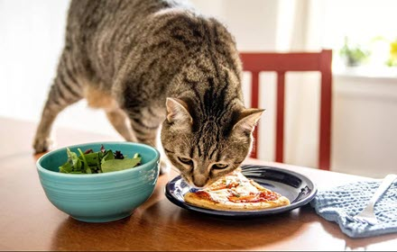

<!doctype html>
<html lang="en">

<head>
	<meta charset="utf-8" />
	<title>https://veterinarian.news/47-best-cat-food-for-sensitive-stomach-in-2021-according-to-experts/ Site Map  </title>
<!DOCTYPE html>
<html lang="en">
<head>
 <title>Cat Food For Sensitive Stomach
Royal Canin Wet Dog Food
Pro Plan Sensitive Stomach
Best Cat Food For Older Cats With Sensitive Stomachs
Highly Digestible Cat Food Brands
Canned Cat Food For Sensitive Stomachs
Cat Food For Sensitive Digestion
Wellness Sensitive Stomach Cat Food
Vet Recommended Cat Food For Sensitive Stomach
Best Canned Cat Food For Sensitive Stomachs
Friskies Cat Food</title>
<link rel="canonical" href="sitemap.html" />
<link rel="shortcut icon" href="img/catfoodforsensitivestomach44.jpg" alt="" />
<meta charset="UTF-8">
<meta name="title" content="Sitemap - Cat Food For Sensitive Stomach
Royal Canin Wet Dog Food
Pro Plan Sensitive Stomach
Best Cat Food For Older Cats With Sensitive Stomachs
Highly Digestible Cat Food Brands
Canned Cat Food For Sensitive Stomachs
Cat Food For Sensitive Digestion
Wellness Sensitive Stomach Cat Food
Vet Recommended Cat Food For Sensitive Stomach
Best Canned Cat Food For Sensitive Stomachs
Friskies Cat Food">
<meta name="DC.title" lang="en" content="Sitemap - Cat Food For Sensitive Stomach
Royal Canin Wet Dog Food
Pro Plan Sensitive Stomach
Best Cat Food For Older Cats With Sensitive Stomachs
Highly Digestible Cat Food Brands
Canned Cat Food For Sensitive Stomachs
Cat Food For Sensitive Digestion
Wellness Sensitive Stomach Cat Food
Vet Recommended Cat Food For Sensitive Stomach
Best Canned Cat Food For Sensitive Stomachs
Friskies Cat Food">


<meta name="description" content="Do you have a cat with a sensitive stomach? If so, you know how difficult it can be to find the right food for them. There are so many different types of cat food on the market, and it can be hard to know which one will work best for your cat.sensitive stomach. That's why we've put together a list of the best cat food for sensitive stomachs, so you can find the perfect food for your cat.">
<meta name="keywords" content="Cat Food For Sensitive Stomach
Royal Canin Wet Dog Food
Pro Plan Sensitive Stomach
Best Cat Food For Older Cats With Sensitive Stomachs
Highly Digestible Cat Food Brands
Canned Cat Food For Sensitive Stomachs
Cat Food For Sensitive Digestion
Wellness Sensitive Stomach Cat Food
Vet Recommended Cat Food For Sensitive Stomach
Best Canned Cat Food For Sensitive Stomachs
Friskies Cat Food, , , , , , ">
<meta name="author" content="">
  
  <link rel="stylesheet" href="https://cdn.jsdelivr.net/npm/bootstrap@4.6.1/dist/css/bootstrap.min.css">
  <link rel="stylesheet" href="https://fonts.googleapis.com/css?family=Kumbh+Sans:100,200,300,400,500,600,700,800,900&amp;display=swap" as="style" onload="this.onload=null;this.rel='stylesheet'">
  <script src="https://cdn.jsdelivr.net/npm/jquery@3.5.1/dist/jquery.slim.min.js"></script>
  <script src="https://cdn.jsdelivr.net/npm/popper.js@1.16.1/dist/umd/popper.min.js"></script>
  <script src="https://cdn.jsdelivr.net/npm/bootstrap@4.6.1/dist/js/bootstrap.bundle.min.js"></script>
        <meta name="viewport" content="width=device-width, initial-scale=1.0, shrink-to-fit=no">

 <link rel="stylesheet" href="https://netdna.bootstrapcdn.com/font-awesome/4.0.3/css/font-awesome.css">

 <style type="text/css">
*{
    font-family: 'Kumbh Sans', sans-serif;
}
    .navbar a{font-size: 18px;
        font-weight: bold;
        color: black!important;
    }
    .btn-md{
            padding: 15px 30px;
            border-radius: 0;
    }
    .mbr-section-subsection{
        color: #999999;
     font-size: 20px;
    margin-bottom: 21px;
    }
    .mbr-section-h1{
        font-size: 46px;
    }
    .text-grey{
        color: #404040;
    }
    .content1{
        font-size: 20px;
         color: #606060;
    }
    .bg-brown{
        background: #eae8e4;
    }
    .display-4{
        font-size:45px;
    }
    .font-weight-400{
        font-weight: 400;
    }
    body{
        color: #232323;
    }
    .content2{
        font-size: 17px;
    }
    li a{
        color: #ff5722;

    }
    ul{
        list-style: circle;
    }
    a{
        text-decoration: none!important;
    }
    .content3{
        color: #696969;
            font-size: 17px;
    }
    .contentImg:hover{
     box-shadow: 0 50px 50px -25px rgb(0 0 0 / 30%);
    transform: rotate(-2deg) scale(1.03);

    }
    .contentImg{
        transition: all 0.3s;
        border-radius: 30px;
    }
    iframe{
        border: none!important;
    }
    footer{
        background: black;
    color: white;
    }
    footer a{
         color: white!important;

    }   
    .underlineShow {
    font-weight: inherit;
    background-image: linear-gradient(120deg, #ffc658 0%, #ffc658 100%);
    background-repeat: no-repeat;
    background-size: 100% 30%;
    background-position: 0 90%;
    transition: background-size 0.2s ease-in;
}
.allShow:hover,.underlineShow:hover{
        background-size: 100% 100%!important;
     
    background-image: linear-gradient(120deg, #ffc658 0%, #ffc658 100%)!important;
    background-repeat: no-repeat!important;
 
    background-position: 0 90%!important;
    transition: background-size 0.2s ease-in!important;
}
.icon-button i{
    font-size: 20px;
    padding: 10px;
}

.icon-button i:hover{
    color: #7CE0D3;
}

</style>
  

 <nav class="navbar navbar-expand-lg navbar-light bg-white px-md-5 pt-3 pb-3">
   <a class="navbar-brand" href="index.html">
        
      </a>


  <button class="navbar-toggler" type="button" data-toggle="collapse" data-target="#navbarSupportedContent" aria-controls="navbarSupportedContent" aria-expanded="false" aria-label="Toggle navigation">
    <span class="navbar-toggler-icon"></span>
  </button>

  <div class="collapse navbar-collapse" id="navbarSupportedContent">
    <ul class="navbar-nav ml-auto">
      
     
                <li class="mt-2 nav-item pr-md-4"><a   class="nav-link allShow   " href="index.html">Cat Food For Sensitive Stomach</a></li>
      <li class="mt-2 nav-item pr-md-4"><a   class="nav-link allShow   " href="royal-canin-Wet-dog-food.html">Royal Canin Wet Dog Food</a></li>
       <li class="mt-2  nav-item pr-md-4"><a  class="nav-link allShow   "  href="pro-plan-sensitive-stomach.html">Pro Plan Sensitive Stomach</a></li>
        <li class="mt-2  nav-item pr-md-4"><a   class="nav-link allShow   " href="best-cat-food-for-older-cats-With-sensitive-stomachs.html">Best Cat Food For Older Cats With Sensitive Stomachs</a></li>
         

         <li class="mt-2 nav-item pr-md-4 dropdown"> 
  <a  class="nav-link allShow  dropdown-toggle" href="#" id="navbarDropdown" role="button" data-toggle="dropdown" aria-expanded="false">More</a>
    <div class="dropdown-menu" aria-labelledby="navbarDropdown">
      
    <a  class="dropdown-item" href="highly-digestible-cat-food-brands.html" rel="nofollow">Highly Digestible Cat Food Brands</a>
      
    <a  class="dropdown-item" href="canned-cat-food-for-sensitive-stomachs.html" rel="nofollow">Canned Cat Food For Sensitive Stomachs</a>
      
    <a  class="dropdown-item" href="cat-food-for-sensitive-digestion.html" rel="nofollow">Cat Food For Sensitive Digestion</a>
      
    <a  class="dropdown-item" href="Wellness-sensitive-stomach-cat-food.html" rel="nofollow">Wellness Sensitive Stomach Cat Food</a>
      
    <a  class="dropdown-item" href="vet-recommended-index.html" rel="nofollow">Vet Recommended Cat Food For Sensitive Stomach</a>
      
    <a  class="dropdown-item" href="best-canned-cat-food-for-sensitive-stomachs.html" rel="nofollow">Best Canned Cat Food For Sensitive Stomachs</a>
      
    <a  class="dropdown-item" href="friskies-cat-food.html" rel="nofollow">Friskies Cat Food</a>
      </div>
 
</li>
          

          </ul>
     
  </div>
</nav>


<section class="top-se container c" style="min-height: 80vh;">
	<div id="top">
		<nav> HTML Site Map</nav>
		<h3>
<span>Last updated:2022 Aug, Wed 
</h3></div>
	<div id="cont">
		<ul class="level-0">

            <li class="lhead"> No of Pages :   <span class="lcount">11  pages</span></li>
            
     <li class="lpage">1) <a  style="color: blue;" href="index.html " >index.html</a></li>
 <li class="lpage">2) <a  style="color: blue;" href="royal-canin-Wet-dog-food.html " >royal-canin-Wet-dog-food.html</a></li>
 <li class="lpage">3) <a  style="color: blue;" href="pro-plan-sensitive-stomach.html " >pro-plan-sensitive-stomach.html</a></li>
 <li class="lpage">4) <a  style="color: blue;" href="best-cat-food-for-older-cats-With-sensitive-stomachs.html " >best-cat-food-for-older-cats-With-sensitive-stomachs.html</a></li>
 <li class="lpage">5) <a  style="color: blue;" href="highly-digestible-cat-food-brands.html " >highly-digestible-cat-food-brands.html</a></li>
 <li class="lpage">6) <a  style="color: blue;" href="canned-cat-food-for-sensitive-stomachs.html " >canned-cat-food-for-sensitive-stomachs.html</a></li>
 <li class="lpage">7) <a  style="color: blue;" href="cat-food-for-sensitive-digestion.html " >cat-food-for-sensitive-digestion.html</a></li>
 <li class="lpage">8) <a  style="color: blue;" href="Wellness-sensitive-stomach-cat-food.html " >Wellness-sensitive-stomach-cat-food.html</a></li>
 <li class="lpage">9) <a  style="color: blue;" href="vet-recommended-index.html " >vet-recommended-index.html</a></li>
 <li class="lpage">10) <a  style="color: blue;" href="best-canned-cat-food-for-sensitive-stomachs.html " >best-canned-cat-food-for-sensitive-stomachs.html</a></li>
 <li class="lpage">11) <a  style="color: blue;" href="friskies-cat-food.html " >friskies-cat-food.html</a></li>
             
 
 
 
</ul>
		<!--
Please note:
You are not allowed to remove the copyright notice below.
Thank you!
www.xml-sitemaps.com
-->
	</div>
 </section>
  
<footer>
    <div class="container py-4 pt-5" style="max-width: 1400px;">
        <div class="row">
  <div class="col-lg-3">
 
                  
      
      
      
      

                    
    
    
    
    
    
       </div>
 
     <div class="col-lg-3">
      
                     
<p class="sub">USEFUL LINKS</p>
             

<p><a class="  allShow" href="https://chrome.google.com/webstore/detail/cat-food-for-sensitive-st/kmbjiofekglbinckeoieiaapghfalmkj"  target="_blank">Cat Food For Sensitive Stomach</a></p>
<p><a class="  allShow"  href="https://chrome.google.com/webstore/detail/wedding-dreams/odgidgndkmcpmdeknfbghnccgohpfadp"  target="_blank">Wedding Registry</a></p>
<p><a class="  allShow" href="https://veterinarian.news/10-large-cat-breeds-that-make-great-pets/"  target="_blank">Large Cat Breads</a></p>
<p><a class="  allShow" href="https://veterinarian.news/does-my-cat-love-me-science-explains/" rel="nofollow" target="_blank">Does My Cat Love Me</a></p>
<p><a class="  allShow"  href="" rel="nofollow" target="_blank"></a></p>
  <p><a class="  allShow"  href=""  target="_blank"></a></p>
</div>

 
<div class="col-lg-3">
         

<p><a  class="  allShow" href="" rel="nofollow" target="_blank"></a></p>
<p><a  class="  allShow" href="" rel="nofollow" target="_blank"></a></p>
<p><a  class="  allShow" href="" rel="nofollow" target="_blank"></a></p>


  <p><a class="  allShow"  href=""  target="_blank"></a></p>
  
 
<p><a href="sitemap.html"  rel="nofollow"  class="  allShow"  >Sitemap</a></p>
 
<p><a href="privacy-policy.html" rel="nofollow"   class="  allShow"  >Privacy Policy</a></p>

<p>
 

 

 </p>
</div>

 
<div class="col-lg-3">
            <div class="social">
                    
                                                                                                                                          
                      
            </div>
    </div>
</div>
    </div>
    
    
    </footer>

</body>

</html>